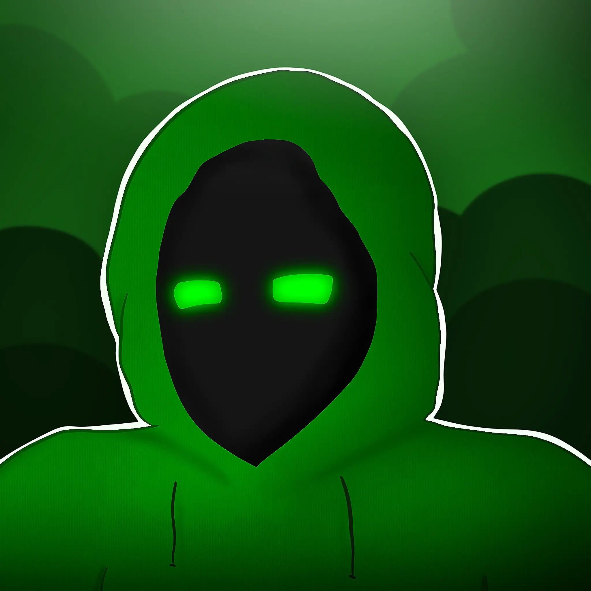
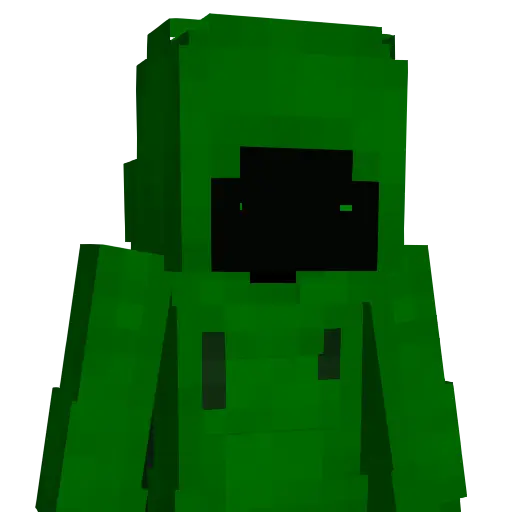

Découverte sur Epicube
La passion démarre sur les serveurs Minecraft. J'explore mécaniques et gameplay — l'imagination devient le seul plafond.
➜ whoami

// Développeur Java — créateur d'expériences Minecraft
➜ status --check
Disponible pour de nouveaux projets
// 7 dépendances installées — outils utilisés au quotidien
La passion démarre sur les serveurs Minecraft. J'explore mécaniques et gameplay — l'imagination devient le seul plafond.
Création de cartes complexes, logique et automation. Première brique vers le code.
Des outils visuels au Java pur. Lecture de docs, tutoriels, expérimentations.
Focus sur la stabilité, la performance et l'expérience de jeu. Chaque plugin est une aventure.
➜ contact --github
➜ contact --discord
@tiktoks
➜ contact --serveur
